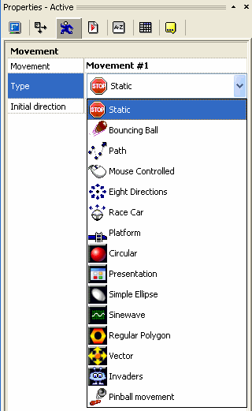

Revision: 1.1, September 2008
Movements are a property that can be attached to many visual objects within CF 2.5, most notably active objects. As the name suggests the movement given to an object influences how it moves or is controlled on screen. Movements provide a way for you to create complex effects without having to write a complete movement engine for each object from scratch. Each movement has custom properties to allow you to tailor how it works to meet your needs. Most of the time this involves setting values in the object's properties panel at design time, occasionally you may also want to change the settings at runtime by means of the event editor. A number of common movements are provided with CF 2.5 and now additional movements can be added too...
With the release of CF 2.5 came an exciting new feature, the ability for additional movements to be added to CF 2.5 in a similar manner to that of extensions. These movements can be developed by users with the CF 2.5 SDK and a some C++ programming knowledge together with the appropriate compiler.
Earlier versions of the Click range included seven in-built movements developed by Clickteam, they are: Static, Bouncing Ball, Path, Mouse Control, Eight Direction, Race car and Platform. These movements are documented in the CF 2.5 help files and integrate into CF 2.5 slightly differently than the additional movements. To introduce the concept of the new plug-in style of movement in CF 2.5 Clickteam included a new movement, Pinball. The source code for the Pinball movement can be found in the movement SDK for those wanting to see the internal workings, or even improve on it.
Another new feature in CF 2.5 is that an object can have multiple movement types associated with it, the event editor can then be used to swap between the movements at runtime. In earlier versions of the Click products each object could only have a single movement, therefore two objects had to be created if you wanted to swap from platform to path movement for example; a messy workaround. Now objects can have any number of movements, although most of the time a single movement is all that is required.
In most cases the developer will provide a simple installer to add their movement automatically, if that is not the case then the following guide should help get that movement installed in no time. To use a movement released by a developer the file containing the movement (suffixed .mvx) needs to be placed in the /Extensions and /Data/Runtime folders within the main CF 2.5 directory. All instances of CF 2.5 should be closed before copying the files into the correct folders.
Once the movement has been installed, run CF 2.5 and start up a new project. Add an object such as an active object to the frame editor and click on the movement tab in the objects properties (looks like a running man). Clicking in the type property should reveal a list of all the currently installed movements as shown in figure 1.

Figure 1: The movement list, note your list may have a different appearance depending upon the movements
currently installed.
Selecting a movement from the list will result in the properties for that particular movement being displayed, the properties can then be configured as required. Please refer to the documentation of the movement for the specific details about its properties.
Click the links below to view the documentation relating to a particular additional movement:
Unfortunately at this time a movement can not interact directly with the menus of the event editor to display options relevant to the movement itself. However a workaround exists where a movement or set of movements may come packaged with a special controller extension. With this extension added into the frame the properties of a movement can be retrieved or set at runtime via the extension's interface.
Click the links below to view the documentation relating to a particular movement controller extension:
The CF 2.5 SDK includes the movement SDK and the code of the Pinball extension together with a help guide introducing the movement SDK.